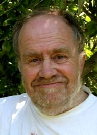
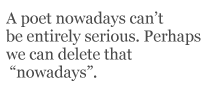
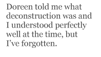

John Whitworth was born in 1945 in India but has lived in the UK since 1947. He is married to Doreen Roberts, who was until recently a Lecturer in English at the University of Kent. They have daughters Ellie and Katie, who frequently feature as subjects for John’s verse. He was educated in schools in England and Scotland, and at Merton College, Oxford, where he gained an MA and B Phil in English Literature. He has worked as a teacher of English to foreign students, as a tutor in Creative Writing at the University of Kent, and has also given poetry workshops and readings at over a hundred primary schools.
With nine volumes of poetry to his credit, John Whitworth has published widely in venues such as Poetry Review, The Times Literary Supplement, London Magazine, The Spectator, Quadrant (Australia) and Forbes (USA). His poems have been broadcast on the BBC, where he has also appeared in various poetry programmes. He is an inveterate enterer of poetry competitions, from which he has won prize money totalling over £5000.
His poetry is vigorous, accessible, and often funny and playful. But a darker and more serious vein very often runs beneath the apparently light-hearted surface tone as he explores more disturbing territory: what may seem superficially to be light verse often broaches very serious subject matter indeed.
John is an enormously entertaining person to interview, his inimitable personality taking the drift of discussion off in all sorts of unexpected — but enlightening — directions. I very much enjoyed putting this interview together: it certainly did not feel like work — more like a late-night confabulation with an endlessly amusing crony over a bottle of single malt. I have carefully preserved John’s UPPER-CASE EMPHATICS which are so emblematic of his discourse.
Publications — Books of Poetry
Unhistorical Fragments (Secker 1980)
Poor Butterflies (Secker 1982)
Lovely Day for a Wedding (Secker 1985)
Tennis and Sex and Death (Peterloo 1989)
Landscape with Small Humans (Peterloo 1993)
The Complete Poetical Works of Phoebe Flood (for children) (Hodder 1997)
From The Sonnet History of Modern Poetry (Peterloo 1998)
The Whitworth Gun (Peterloo 2002)
Being the Bad Guy (Peterloo 2007)
Publications — Other Books
The Faber Book of Blue Verse (anthology) (Faber 1997)
Reissued as Making Loveto Marilyn Monroe (Faber 2006)
Writing Poetry (A&C Black 2001)
Writing Poetry (Revised 2nd Edition) (A&C Black 2006)
PS: Let’s get straight to the mandatory “influences” question: I’m seeing influences in tone, subject and style from Byron, Betjeman, Gavin Ewart, perhaps even Gilbert and Sullivan. Am I right? Who else?
JW: Yeah. All of those. And Larkin and his mate Kingsley too. Kingsley Amis isn’t THAT much of a poet, but his prose style, the way he takes off into flights of fancy (much better than that miserable little snob Waugh). Oh, and Stevie, Stevie Smith. And Lewis Carroll. You must have noticed HIM. Just lately, I mean the last year or so, I am greatly taken with the American, Sam Gwynn, who wrote a marvellous poem called “Train for Ill” which takes off from a line of Housman (“ …train for ill and not for good”) and a sudden vision of Daffy Duck with Trainman’s hat and flag yelling “Train for Ill! Train for Ill!” Tennyson’s “Lady of Shalott” comes in too, Google it and you’ll see. A poet nowadays can’t be entirely serious. Perhaps we can delete that “nowadays”.
PS: I’ll agree that you are not a million miles away from Alfred Lord T, and that Lewis Carroll has come to the party (along with Edward Lear); nor are you dissimilar to Kipling, and I’ve already mentioned Gilbert: in fact I suggest that your verse has a distinct High Victorian feel to it.
JW: My verse is High Victorian, eh? Well, I didn’t use to think so, though it’s true when someone like yourself asked me a question about poetic influences a long time ago, I said Robert Browning. And it’s also true that John Betjeman, who is very obviously an influence, was a great man for Victorian verse. And I’ve read and reread anthologies of comic verse and light verse, three marvellous Penguins called Comic and Curious Verse, More Comic and Curious Verse, and Yet More Comic and Curious Verse. And Victorians feature very heavily there. Then there are Chesterton and Belloc, I love them. And they are rooted in Victorian Verse. And, yes, I think Tennyson and Browning and Arnold are marvellous poets and there are not a whole lot of laughs in any of them (a few in Tennyson). And if you want to do the sort of stuff I do, then you are bound to look at Gilbert. When I was twelve or thirteen I went to lots of Gilbert and Sullivan, done by the D’Oyly Carte, properly I mean, not messed about with some pop person doing bits of it.
PS: You often mention Robert Graves in discourse. Has he influenced the way you write and think?
JW: I SAW Graves you see. When I was at uni. He came and lectured because he was Professor of Poetry. He was my idea of a poet, with that craggy profile and all that serious nonsense about White Goddesses. A Georgian antidote to Eliot. Eliot was the big cheese when I was young. Too big, I thought then, and I think so still. Good for a handful of poems but not exactly Tennyson, let alone Shakespeare.
PS: So what do you think of Graves’ notion of Muse poetry then? Was he merely “henpecked… [to make] a White Goddess out of Laura Riding” (as you put it in “Opium of the People” in From the Sonnet History of Modern Poetry) or was he projecting the relationship between poet and inspiration?
JW: I think the idea that poetry comes from somewhere outside yourself, rather than inside, is valuable. I don’t DO confessional stuff and I don’t particularly like other people doing it either. When I was at university I had a room on the ground floor in Merton College and blokes would come round at eleven o’clock at night and tell me far more than I wanted to know (which was nil) about their emotional lives. They felt it gave them depth. I preferred things shallow and I wished they’d go away but I’ve never been very good at telling bores to eff off. The White Goddess is nonsense of course, but it’s better nonsense than Yeats’s gyres. Graves was much better educated than Yeats and it shows.
PS: So how do you see your own processes of poetic inspiration? Is there some Whitworthian mythos equivalent to The White Goddess or Yeats’ A Vision?
JW: No there isn’t, or not exactly. I used to be quite taken with Larkin’s formulation, that a poem preserves an emotion, so that whenever somebody reads the poem it releases the emotion. I think that’s what he says. But I now think that though that works for a lot of Larkin’s poetry, and perhaps for Hardy’s and Housman’s, it doesn’t work for quite a lot of other people’s, and in particular it doesn’t work for funny poems. Of course Larkin wrote some very funny poems and I don’t think it works for them.
I think that poetry is a kind of function of language. We are lucky that English is our language because it’s better than, say, French for poetry. All those millions of words and all those different ways of saying the same, or similar, things. And new words all the time. At my daughter’s school about ten years ago all the girls divided into freaks and chavs. Well, ‘freak’ isn’t a new word, but ‘chav’ is. And it gives us chavvy (an adjective) and even chavette, a very young female chav. Don’t you just love this kind of thing? I discovered quite recently that a runcible spoon actually exists. But what about a runcible hat? And in the Eagle, a comic of my youth, the evil genius of the universe was called the Mekon. He has a big green head and a tiny body and buzzes about on a sort of flying toilet. What else could you call him? He got himself into a poem I wrote not so long ago (“Rabbit Rabbit”, included in this issue of The Chimaera).
PS: What poets are there that may not have influenced you much, but whose poetry you like anyway?
JW: Shakespeare. Browning. Wallace Stevens. Stevens is surprising. He surprises me, actually. Language, don’t you know. What language can do. We are so lucky having English. We might be stuck with French with a tiny Latinate vocabulary. Or Swedish, a language nobody else knows. English is like Ancient Greek, all the words, all those different ways of saying. What do I know about Ancient Greek? I LEARNED it at school for three years. Too hard for me. A hard language with too many dialects. Like English perhaps. I used to teach English to foreigners and it IS hard. We are lucky — English, Aussies, Americans, because it’s not hard for us. We’re ahead of the game. Two other poets I like are Wendy Cope and Sophie Hannah. Oh, and Kit Wright. A small genius, Kit Wright. Poems out of print. Disgraceful really.
PS: What qualities do you like in Cope, Hannah and Wright?
JW: Well, they use rhyme and metre for a start. Wright doesn’t use it all the time, but it’s integral to what he does. You have to understand that for years I felt a tension between the poems I wrote and write, and what most people seemed to do. William Carlos Williams summed it up. You know “The Red Wheelbarrow”. After years and years I had to admit that it seemed to me the poetic equivalent of Mondrian’s paintings. You see what he’s doing and it’s quite nice, don’t you know, but how can you go on and on doing that for a whole life? There isn’t enough to it. I mean Carlos Williams’ complete works are a bloody great book of that sort of thing. Of course I could take living poets as examples, but there’s no need to have REAL blood on the carpet.
Anyway, Wright and Hannah and Cope don’t do that. They do what poets have always done. Of course the comeback is always that this sort of stuff is all very well but it isn’t DEEP and IMPORTANT. I don’t know that poets should strive to be deep and important. I think they should be interesting and user-friendly. In fact, as that old Oxford philosopher said, “Importance isn’t all that important. Truth is.” These poets all say things which are true. And so do I. So do I. They are also good at sadness. I think poets have to be able to do sadness.
PS: You mention Peter Porter and Les Murray occasionally (in your excellent book Writing Poetry, for example). Are there any other Australian poets you’re familiar with?
JW: The Australian poets I’m familiar with are the ones I read in the copies of Quadrant that come my way: that would be the copies of Quadrant that I’m in. I like Geoff Page a lot. Succinct. That ought to be an Australian quality, succinctness. Les sends me books and I find poems in them that I like. A wonderful one called “Conversations with Women” by Lorin Ford. It’s that rare thing, a ghazal that’s actually any good. Oh, Clive James. I like Clive James. But I would, wouldn’t I? A lot of people write him off because he’s a journalist and he got rich. That seems very mean-spirited. He’s a good poet. “Anniversary Serenade” — a dazzling rhymefest chock full of feeling, as Les might say.
PS: Your verse seems to me to be an extraordinary blend of light verse, formalist and confessional poetry working a very candid and personal vein of content. This seems particularly true of Landscape with Small Humans, reading which has for me been a very unusual — and often unsettling — experience. It seems to be quite unlike any other poetry I’ve read, because of its odd combination of style, tone and subject. Did you see it as ground-breaking?
JW: Good Lord, no! Except for me. It was ground breaking for me. It got written because of a man called P.J. Kavanagh who was poetry Editor for The Spectator. I had written two or three that had started as sonnets and sort of grown too big, and I sent them to him. He printed them all so I wrote more and he printed them too. Maybe half of them were printed in The Spectator at sixty quid a time.
I was obsessed with my childhood. Obsessed. I wanted to get it down before I forgot it. Sheer egotism, but poets are all egotists. Egotists and blockheads who write and not for money. So that’s another obsession of mine. I can’t take a poem of mine seriously until I’ve flogged it for money. And P.J. Kavanagh was the one who paid. Or caused The Spectator to pay. Sixty pounds a shot. Les Murray does that now for Quadrant. I sell lots to Quadrant. But damn few to The Spectator. And pretty well none at all to Poetry Review, our biggest poetry magazine. I used to a couple of editors back. But not now. In Britain rhyme and metre is considered NOT SERIOUS. Rather in the same way that Conservative politics are considered NOT SERIOUS. Or wicked. Perhaps rhyming is wicked. I suggested writing an article for Poetry Review on using rhyme and metre. But the present editor (a nice person) said that would be far too controversial (i.e. not serious).
PS: The poems about childhood and youth in Landscape with Small Humans seem startlingly honest: a kind of raw, disarming honesty and frankness that seems to push the verse from a humorous irony towards something grittier — perhaps even confessional (though you’ve said earlier that you dislike confessional verse). How autobiographical is Landscape? What was your larger purpose with this set of connected poems?
JW: All the poems are true, right down to details like the name Valentine Tudball. I did change the name of one boy to Sandy Ross, because I thought he might be embarrassed.
There wasn’t a purpose initially. As I said, I wrote a few and sent them to P.J. Kavanagh at The Spectator and he liked them. In fact he liked them a lot so I was spurred to write more. I don’t know how many were first published in The Spectator but quite a few. Then it occurred to me that I could do a whole book of the things, and I asked Harry Chambers at Peterloo Poets how many that would be, and he said fifty-two. So I then thought what about twenty-six in England and twenty-six in Scotland, and it further occurred to me that my mother’s death would make a suitable end point. So then I filled them in, as it were. The poem about my mother actually dying was very difficult to do. I didn’t want to think about it. So I wrote two shots at it and either Harry, or it was myself, thought that the best thing was to publish both of them. The conversation with God is absolutely accurate, but I think that the second poem is better.
PS: You’ve said (on the Eratosphere internet poetry forum) that “lying and poetry are surely inextricably linked”. Do you see writing poetry in any sort of way as a kind of truth-telling, or more as a process of constructing entertaining verbal fictions?
JW: Well, it’s like writing novels, isn’t it? You tell lies as a way of saying things that you think are true. I remember some chap interviewing me and supposing that my wife was dead because one of the “I” characters in one of my poems was a widower with a little boy. “No,” I said stoutly, “I am married to a wife who is definitely alive and I have two daughters and no sons. But I do have cats.” I certainly think anything anybody writes for publication where the intention is more than just passing on information, ought to be entertaining. If a poem or a novel doesn’t entertain me then I stop reading it, so why should I inflict on others what I avoid myself?
PS: It’s hard to find many poems of yours which do not have at least some flavour of humour, irony, flippancy, or where playfulness is not the dominating dynamic. Where you do adopt an apparently more serious tone it seems to be when writing about your daughters. Do you think it’s fair to call much of your work “light verse”?
JW: Light verse is fine by me. But then I take it you would agree that Byron’s “Don Juan” is light verse, and Dryden’s “MacFlecknoe”, and quite a few of Larkin’s poems, “A Study of Reading Habits”, “Posterity”, “Vers de Société” and “This Be the Verse”. I’ve always thought that last one is funny, particularly the last stanza. Auden wrote plenty of Light Verse too. In fact name me a poet who didn’t write any? Gerard Manley Hopkins. Yeah, not a lot of laughs there. I DO write some poems that are not funny. There’s a sonnet called “Minstrel Boys” about an IRA bomb and a series about my (then) two-year-old daughter which are not supposed to be funny. Also the poem “Faith Zone” (published in this issue of The Chimaera).
PS: Is there a Whitworthian formula that you write to?
JW: I don’t think so. Of course they all rhyme and scan, but that’s not a formula, is it? I’ve tried writing free verse, there’s some in my Phoebe book for children, but in general I’m not happy with the results.
PS: Well then, how does the normal John Whitworth poem get written? How do ideas come? What inspires you? Do you have any favourite mechanics of composition: using a quill, say, or a word processor? Do you take your verse through many revisions?
JW: Well, let me tell you about the last two poems I wrote. I was watching one of those American crime series, Without a Trace it was, and the plot was rather a silly one about a mathematics genius who suddenly realised his life was an empty place and got a job as a Santa Claus in a Department Store. It ended happily, you will be pleased to hear. Anyway, I don’t go to bed very early these days, being an old person and so forth, and I was sitting at the computer and I thought about this Santa Claus who felt he was getting past it, and I could see it, three stanzas and a chorus (sounds like a formula, doesn’t it?), a lyric without a tune really, so I wrote it, just like that, in a couple of hours. Definitely a light piece. Then there’s the other one which I don’t think is light at all, an “Elegy for Tom Disch”, the poet and Science Fiction writer who recently shot himself. I’d been reading some of his prose and a lot of his poetry, and I thought some of it was very good indeed. There’s a poem called “A New Religion Starts Tonight”:
I have decided I’m divine.
Caligula and Nero knew
A godliness akin to mine,
But they are strictly hitherto.
They’re dead, and what can dead gods do?
I’m here and now. I’m dynamite.
I’d worship me if I were you.
A new religion starts tonight!
It’s a Ballade as you probably guessed. I found a direct quote from Disch: “Being a genius is enough for any man. And I think I’m going to have to learn to live with it.” There was obviously a poem in there somewhere for me. So I started with the quote. I messed around with the quote (it may not have been EXACTLY as I quoted it) and finally came up with the first two lines:
Being a genius is enough for any man
(And I think I’m going to have to learn to live with it)
There’s a masculine rhyme there, and a good one. Plenty of scope. And then a feminine one. Live with it/forgive with it — I’m not too sure about that. Anthony Burgess, in his Enderby novels (about a fat, middle-aged poet with no money), talks about rhymes “lining themselves up”. Very apt, I thought. That’s what they do. I compose direct onto the computer, which means I don’t often write poems on buses and so forth. Though sometimes I think of bits of ones I’m already working on when I’m swimming up and down the Faversham baths. One good thing about rhymes is that you can remember what you’ve composed without having to write it down. That’s where the free verse always falls down. Quote me half a dozen consecutive lines by Walt Whitman.
PS: Well, being no Whitman fan myself, I certainly can’t do that. But I agree with your point. You’ve said “Sometimes I don’t know what the poem’s about until I’ve finished it. Sometimes not even then. I have to wait for someone to tell me. This sounds awfully cute but it’s really true.” Is that really true?
JW: It may be cute but it’s also true. It has to be a certain KIND of poem. Since my poems are driven by SOUND rather than sense, there are some like that. One I wrote recently called “Shark”. What I’ve taken to calling my “Rimbaud poems”, though perhaps they’re more like Dylan Thomas.
Certainly I rarely have an idea of exactly how the poem will go. I want it to grow as I write it, if you see what I mean. There’s an awful lot of stuff you see, it’s about as poetic as a timetable, worthy thoughts trundled out in more-or-less iambics. You need space for the symbols to work. If you’re a poet then you’ll think in symbols and pictures and unconscious connections. Look at Larkin when he’s at his best. The end of “The Whitsun Weddings”, that arrow-shower. How does it connect with the rest of the poem? On the conscious level it doesn’t, but everyone who reads the poem properly knows it’s right. And in “Aubade”, “huge, moth-eaten musical brocade” — absolute genius. And later in the same poem “postmen like doctors go from house to house”. Where does he get it? The answer is he doesn’t know. “Sheer genius!” he says only half ironically.
Coming back to Rimbaud, what I’m really thinking about is a poem of his called “Le Cœur Volé” — which is (more or less) three triolets.The meaning is impenetrable, at least to me, but the FEELING… I should like to write like that.
PS: What do you think is your best work? Why?
JW: Wendy likes Landscape with Small Humans. I’ll go along with that. I think I’m writing now as well as I ever have. In other words I don’t see why my next book shouldn’t be my best.
PS: Where did Phoebe Flood come from?
JW: If you mean the name, my daughter Ellie was at school with a boy called Joshua Flood. I called her Phoebe because somebody mispronounced the name Pho-ebb, and I thought that was funny. I wanted an obviously middle-class name for an obviously middle-class girl. Don’t you just LOVE the middle-class? All that we call civilization comes from them. Well, not quite all, but a lot. Do you have class in Australia?
PS: We pretend not to, but of course we do. John, I’m struck by your amazing use of rhyme, and the sheer playful vigour of your verse — even when it deals with quite serious subjects. You frequently use full rhyme, feminine rhyme, trisyllabic rhyme, near rhyme, and the sort of cobbled-together rhyme Byron used in “Don Juan”:
Her thoughts were theorems, her words a problem,
As if she deem’d that mystery would ennoble ‘em.
And then there’s those rhymes where the first part of a hyphenated word is made to rhyme:
A woolly bobble and a puck-
Ered tube that held a fat cigar,
A big duck and a little duck,
Three rattles and a Hong Kong car.
(“Poems for a Very Small Daughter” from Tennis, Sex and Death)
All of this makes your verse very energetic and very musical. How hard do you work at these rhymes? What do you see as their function in your poetry?
J.W: Oh I work quite hard at them, but I think it’s natural too. I use the Penguin Rhyming Dictionary. Byron used Walker’s (J. Walker’s Rhyming Dictionary of the English Language) and I found Walker’s a couple of weeks ago in a second-hand bookshop, updated of course, or at least reprinted. I NEARLY bought it. The function of the rhymes is to make the poetry go at all. I can’t write it without them. Why not? I think, I think that it stops me going on and on in that dreadful formless way invented by Walt Whitman and carried on by so many boring old farts (and young farts) who think they are God. Blake’s another. Those dreadful prophetic books. It’s only when he rhymed that he was any good. There are plenty more that you can think of for yourselves. I think poets who are unintelligible should be imprisoned until they have written a hundred good limericks or just died. It’s a male thing mostly. Women don’t do it, or nothing like so much. See Wendy Cope and “Men and their Boring Arguments”. I think rhyme and metre have the function of getting you to work on the FORM and letting the CONTENT creep up on you unawares. You can say things you didn’t know you COULD say. Or so I find.
PS: Who else’s work do you like amongst those writing now?
JW: There’s a thing called Eratosphere which you can find on the internet. Full of poets, mostly Americans, but not ONLY Americans, who rhyme and scan and do stuff like that. I often find poems there that I like. And poets. You try it.
PS: I know of no other easily-accessible internet site where you can achieve the same high-quality criticism and comment as you can there. And certainly the poets at Eratosphere have been mighty supporters of The Chimaera (and its disreputable parent, The Shit Creek Review). So do you find it useful to workshop poems there? Or do you bounce new poems off someone else? Or are you a rugged individualist who doesn’t seek that kind of feedback?
JW: I have stuck poems up on Eratosphere. I like it when people say nice things and I don’t like it when they say nasty things. I was never very good at taking criticism, in which I am like most of the human race. Do I take it personally? Yes I do. What I want is unadulterated praise. But I do send my poems to a couple of people and I do pay attention to what they say — and what they don’t say. But I know that they are in broad sympathy with what I do. I am about as rugged as a blancmange; if you’re nasty to me I’ll burst into tears. However, in the end you have to write what you write. I’m afraid I want people to like me and I want people to laugh in the right places.
PS: What do you dislike in poetry?
JW: Free Verse. Walt Whitman. The whole Guardian thing. The Guardian is a British newspaper of a preachy, left-of-centre, snotty save-the-planet sort of bent. You’re a poet so you MUST think this and this and this It’s your duty as a poet. All that stuff.
PS: Are “left-of-centre, snotty save-the-planet” sorts incapable of writing good poetry then?
JW: Good Heavens, did I say that? I take it back. Let me tell you I jolly well put all my rubbish in the right bags and I would certainly drive my little car less if there was some sort of a government grant to pay for taxis. Why, I was on a bus only last week waving my old person’s free pass. Anyway, you don’t want to listen to old poets banging on about politics — the nonsense we talk. I’m just sounding off, brandishing my Daily Telegraph (a British newspaper of a wicked, reactionary, Tory vermin sort of stripe). Louis MacNeice was a left-leaning BBC person, and he’s a great man. Come to that, my English teacher at school, someone I much admired, was a left-leaning person. And so was I in those days. What I just said was pure prejudice, and should be ignored. I shall feel much better when the whole Blair-Brown episode is over and the subsequent right-leaning government proves venal and incompetent over the twenty years of its reign. People of ANY political bent can write well. After all, the jew-hating fascist Ezra Pound could write good poetry (though not that much, it’s true). And Milton, a most unattractive man according to me, wrote Paradise Lost.
PS: Do you read much outside poetry? What sorts of books? Favourite authors?
JW: My favourite authors at the moment are J.L. Carr. Read The Harpole Report — the greatest novel of the 20th century (just ahead of Kingsley Amis’s Lucky Jim) — and then read the other six novels this wonderful man wrote. Read also his Carr’s Illustrated Dictionary of Extra-Ordinary Cricketers. That guy O’Brian who wrote all those seafaring novels. They made a good film from them called Master and Commander with Russell Crowe. P.G. Wodehouse. I’m filling in the blanks there. And a detective story writer called Donna Leon. All the novels are set in Venice and have long descriptions of the food he eats. Raymond Chandler. The William books for children by Richmal Crompton. Dorothy L. Sayers. It’s STYLE I like, don’t you see? Lots of Victorian stuff that I reread, Dickens and George Eliot and Charlotte Bronte and Stevenson and even, God save us, Walter Scott. I can read Joseph Conrad at a pinch but Henry James is now beyond me, though I like the IDEA of James. Updike’s good though I haven’t read one for a bit. Nothing too hard. I read translations of Proust and Thomas Mann once but I wouldn’t do it again. I don’t think so. Too hard.
PS: Do you like any other “children’s literature”?
JW: I quite like it. But I’m not a child and my children are no longer children. I tell you one children’s writer I really do like, and that’s Anne Fine. The novels she wrote for twelve-year-olds.The best known is Madame Doubtfire because it was made into a film, but there are plenty of others. I like particularly Goggle Eyes and Up on Cloud Nine. They seem to me to be real novels, short novels that you can read at any age. I like the short bit. I met her once. Brisk and bossy and not at all full of herself. I suspect she’s a Guardian-reading, save-the-planet person too. Where would we be without such people? I think I like it better if they’re women. And don’t you dare start unpacking that remark. Do I mean deconstructing? Doreen told me what deconstruction was and I understood perfectly well at the time, but I’ve forgotten.
PS: Tell us a bit about your life, especially (but not necessarily) as it relates to your poetry.
JW: Well, I live in Canterbury with my wife Doreen and our cat. We used to have two cats but the other one died. When Sholto, that’s his name for God’s sake, dies, and he’s in his dotage now, we will buy two more. You ought to have cats in pairs. They really like it. At the moment our younger daughter lives with us but she’s off to Brighton (a kind of British San Francisco — all gays and drugs) to do Art. She’s a good painter. I think so. Our other daughter lives a couple of miles away. She is an Occupational Therapist and at present works with mad people which she likes a lot. And she’s good at it. We get together quite a lot for eating and drinking. I eat too much and drink too much (but what is too much?) and teach what they call Creative Writing. Do you have Creative Writing? Lots of people laugh at it, and I used to, but I like doing it. I can more or less teach what I like — which are poems with rhyme and metre and how to write them.
I write poems and try to win poetry competitions. Actually I haven’t won one for a bit. I hope I’m not losing my touch. I should like to be richer and more famous, particularly richer. Can you bring this about? I follow the cricket on Sky Sports and look forward to an England win against Australia in 2010. Five England wins actually. One after the other.
I wrote a book on Writing Poetry and it sells quite well. I want to write another about playing with words but I’m not sure who would publish it. Ditto my novel/autobiography covering the five years after Landscape with Small Humans. I’ve written most of that and I mess about with it from time to time. But I’ve never got round to trying to SELL it.
You see, I think I’m a pretty good poet and the people who don’t think so are just wrong. You know I feel that in much the same way an Evangelical Christian feels about Catholics and Muslims and other Pagans. They are just wrong and it doesn’t matter how many of them there are. They are wrong. But I don’t have that confidence about my prose. It might well be no good. Ann Stevenson won an incredible amount of dollars for some poetry. Perhaps I could do that.
PS: John, The Chimaera team is working like the clappers to make us all much, much richer, and much more famous too. Poetry tycoons. Writing Poetry is even better in my opinion than Stephen Fry’s splendid The Ode Less Travelled — it’s great fun to read and very liberating of one’s ludic tendencies in the verse department. Oops! — better not say “liberating” to a crusty Tory!
JW: As for Writing Poetry, yes, I think it’s not bad at all. I’ve read the Stephen Fry book and it’s full of the right stuff, but the aim of such books is to encourage people to write their own poetry and somehow Fry doesn’t manage to do that. I think it’s his lofty tone, which I think he was born with. He seems to be saying, ‘I confess my own poetry isn’t up to much and, seeing I’m so clever, don’t imagine YOURS could be any good at all.’
PS: When did you start writing poetry? What made you start? What made you stick at it?
JW: I said this in Writing Poetry but some of you may not have that volume to hand, so I’ll say it again. I didn’t write poetry at school. I was too busy trying be a famous actor who opened the batting for England. At Oxford (just get THAT in) I started to write love poetry. Very dire stuff it was and no I didn’t keep any of it. I was actually at Oxford for ages (you could do degrees for ever in those days and all for nothing) and I met Libby Purves, a very clever girl who is now a journalist and radio presenter. I used to go round to her college after dinner and climb in (the wall was very low), but most of the time she wasn’t there so I sat and tapped light lyrics on her typewriter. She typed similar stuff back, and by the time our non-affair ended, she had about half a dozen light Whitworth. When I finally left the place and got a job teaching foreigners she wrote to me and asked if she could use my lyrics in an anthology she was doing with the Oxford poet Sally Purcell. Of course I said yes, and in due course The Happy Unicorns was published by Lord Longford and I got a fiver for five poems. I’ve still got the book somewhere though I’m not sure where. So basically I started at the top, published in a serious hardback by a serious publisher for money. Then there were ten years trying to emulate this first success appearing in duplicated magazines like Good Elf and Bogg.
PS: “Half a dozen light Whitworth” sounds like an ale! So what helped your poetic career along the way after that?
JW: What helped my poetic career immeasurably is really a who. Anthony Thwaite was the poetry reader for Secker and Warburg at the beginning of the Eighties. That meant effectively he was the Poetry Editor. I met him at a poetry bash for an anthology called New Poetry 4. He had chosen three of my poems for that and he greeted me with the immortal line “You’re the man who writes all the dirty poems.” The bash was huge and alcoholic and around closing time (we had closing time in those days) I was with Peter Porter, a very good egg, and he took me off to a pub and there was Thwaite who said how much he had enjoyed my (dirty) poems. I should send him about fifty. “Why?” I enquired, pushing a gin into his hand. And he told me he was the Reader for Secker and Warburg. And that is how my first book came about. It even won some small prize — that was down to Thwaite too.
Recently, coming second in the Times Literary Supplement competition led to my making the acquaintance (through Wendy Cope) of Sam Gwynn who is emphatically my kind of poet. So now I tune in to the Eratosphere most days and write more and (I think) better poems. I should mention four other editors, P.J. Kavanagh at The Spectator, Peter Forbes at Poetry Review, Sebastian Barker at the late lamented London Magazine, and Les Murray at Quadrant. I seem to be a rather eclectic taste. You like what I do or, more likely, alas, you very much don’t. I used to wonder why and how I could make myself more liked, more likeable. But now I think, to hell with it, they’re all wrong and I’m right.
PS: Where do you hope to go with your poetry from here?
JW: Well, rich and famous would be nice if you can swing it, but I’m afraid all I see in the tea-leaves is more poems like the stuff I do now. I don’t see it GOING anywhere. Just writing myself into my grave. I could say I’d like to travel, be an international poet, but actually I don’t much care for travelling. Italy gives me all a foreign country could. Nice food, nice weather, nice people, nice prospects. Mind you, you get that in Cornwall. Of course I’d go anywhere (except maybe the Middle East which is far too dangerous) if people paid me money.
PS: I’ve been vastly enjoying Being the Bad Guy, which I’ve been reading and re-reading in odd moments at school — laughing out loud occasionally and attracting puzzled stares from the student body.
JW: Thank you for the kind words, particularly about Bad Guy, because that’s the stuff I write now. Should be a new one, say next year, called, I think, Girlie Gangs.
PS: For some reason the sonnet beginning “Respected Sir, your camels are on fire” in Being the Bad Guy sticks in one’s mind. Can you remember what set that poem in motion for you?
JW: It is a poem that pleases me. I think the result is just as I envisaged. I read somewhere about the spread of English world wide. We already have American English which is obviously more widespread than the English English from which it sprang. Europeans speak of a European form which coins words like “overview”. But the variation that strikes me as the most poetic is Indian English. There is a novel by G.V. Desani (published in 1948!) called All About H. Hatterr. My poem is written is a similar dialect. It reminds me of Elizabethan English not really suitable for novels (H Hatterr is a bit much to read THROUGH, though nowhere near as much too much as Finnegans Wake or even At Swim-Two-Birds). Why can’t there be another Shakespeare? Because English is too old. Can it be born again? Perhaps in India. India, not China, is the next civilisation. Or I hope so. It is more congenial, don’t you think? That’s a bit too much to hang on a sonnet. But I love trying on different dialects, as it were. And anyone can read to the end of a sonnet, though a lot of us can’t get to the end of a novel. Les Murray often seems to be writing in a new dialect of English, in Murray, as it were. And perhaps Ashbery, though I find him less congenial. He lacks the protean inventiveness. I think poets are in a position to remake their language constantly, in every poem if they want to. Perhaps doing that is one of the reasons I am not rich and famous. If you continually change your discourse then the critic does not know where he is. You might, after all, be just taking the piss. SERIOUSNESS is the death of literature. CLUNK-CLUNK-CLUNK and a moral. I’m going on a bit.
PS: You mentioned that you were highly-placed in the Times Literary Supplement readers’ poll recently.
JW: I got the second prize and I tell everybody I would have got the first if it hadn’t been for the winner’s Welsh relatives. Not true, according to the TLS poetry editor. The Welshman won by a street, and a jolly good poem it was too. Actually I enter competitions a lot and I win bits and pieces pretty regularly and better than that occasionally. What I like about competitions, besides the money that is, is that they are anonymous. It’s the poem that wins and not the poet. Incidentally, I haven’t had a poem printed in the TLS ever, except for that one. It’s called “The Examiners” and you can google it. I think I’ve written better poems but, hell, what do I know?
PS: No need to google it, John — “The Examiners” is in the first issue of the very organ that is interviewing you as we speak: to wit, The Mighty Chimaera, Issue 1, October 2007, here. We published it around about the same time as the TLS, and a fine poem it is too. Finally, what question should I have asked you in this interview but didn’t?
JW: You should have asked me whether I would like to give a series of six readings in Oz for a thousand quid a reading, all found and my Qantas ticket paid, to all my adoring fans. The whole lot in less than a fortnight. And I accept with pleasure.
PS: Done!